Digital-native publishing house where Comedy lives
Welcome to Adventure Press ePublishing House! Whatever serious we're talking about, everything turns into a comedy show, so you're warned.
We love adventures, irony, sarcasm, and the art of playful parody. Not to mention our great love for the Victorian Era, the time of the famous detective Sherlock Holmes lived and suffered, that is worked. We connect the past with the present, the ordinary with the unbelievable, because adventures mean an ordinary person in extraordinary circumstances (or vice versa).
For our Russian-speaking readers abroad, our books are available on the Bookmate online service.
Our books
Imaginary England Series
Keep Calm and Love England!
Elena Sokovenina. Meet Madam and Her Butler
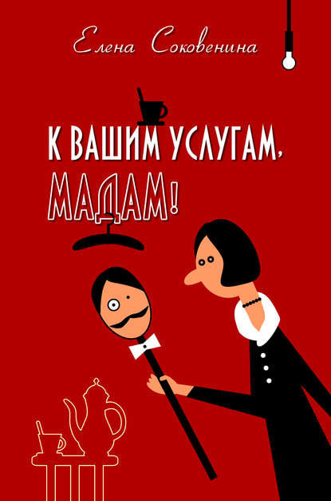
Meet Madam. She's a countess. And this is James – her butler. Every self-respecting countess must have a personal butler. Someone to pour her morning coffee, fend off nosy neighbours, and rescue her from midnight fridge raids. In short – someone who's always there to help Madam navigate life's little disasters.
Natalia Pavalyaieva. Mrs Tinkham Out and About
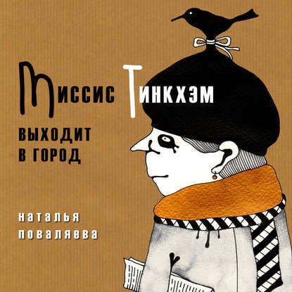
Mrs Tinkham is, as people say, a lady of indeterminate elderly age. She sports a black felt beret with a bird perched on it – and will only venture outside wearing it. She's endlessly chatty and forever roping strangers into conversation – often much to the surprise (and occasional dismay) of tourists and newcomers alike.
Natalia Pavalyaieva. Three from Bloomsbury (To Say Nothing of the Cat and the Pretzel)
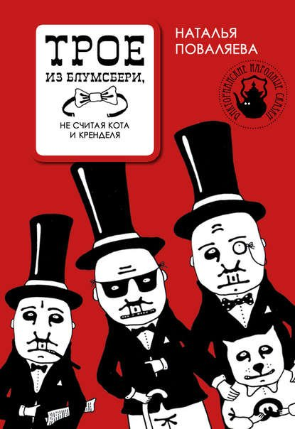
One night, Sir Harry set off… or was it Sir Andrew? Anyway, three best friends (not forgetting Thomas the Cat and his partner-in-crime Pretzel) met at Horns and Tambourines, their favourite pub. Life here is buzzing – pink masks, psychoanalysis, and the occasional doppelgänger.
Natalya Pavaliaieva. Mary-Ann and the Oxford Street Monster

If you ever find yourself in London's bustling Oxford Street and spot a hole in the pavement, don't just walk past! Help them out – it might be the start of a wonderful friendship!
Natalia Pavalyaieva. Jane Austen and the Wooden Leg of Mrs. La Tournelle
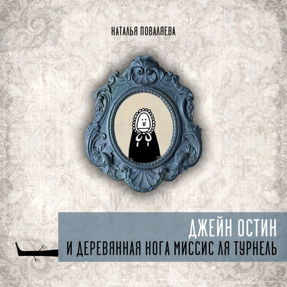
Everyone knows Jane Austen – a great classic of English literature! ...
Elena Sokovenina, Natalya Pavaliaieva. Tom Jones: The Man in the Cupboard
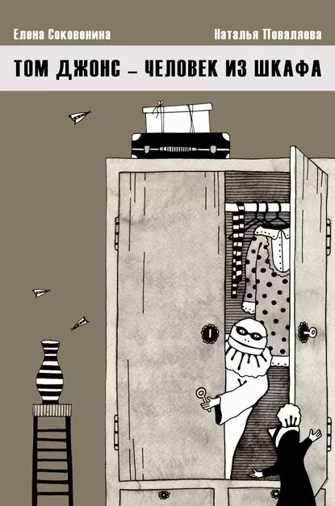
Allow us to introduce Mr T. Jones, Esquire – a gentleman who lives in a cupboard...
Natalya Pavaliaieva, Elena Sokovenina. Royal Idylls
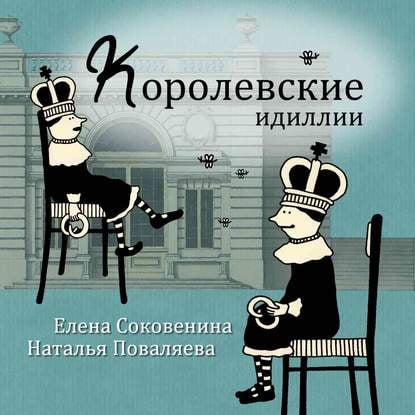
The monarchy is fading. There's hardly anything left of it; the world is hopelessly modern, and queens with their palaces are becoming relics of the past. What a shame! What will happen to those timeless values? The universal values – much like the idylls of a bygone age, as Alfred Lord Tennyson might have put it.
But never mind – as long as Buckingham Palace stands, there's a place to find comfort from our chaotic lives. Even Sir Arthur Conan Doyle once wrote little books for that dollh… oh, sorry! Her Majesty's lidivary, of course. Time moves on, yet the monarchy still keeps us updated on life at Buckingham Palace – where the Queen has travelled and what's new.
Indeed, few know about the dollhouse – the monarchy's greatest treasure – or the games played inside the palace, or about Mrs Strausova's visit, and certainly not how the filming of Her Majesty's Christmas message really happens, which we watch every year with such anticipation.
Imaginary Europe
Elena Sokovenina, Natalya Pavaliaieva. Tram Number Ten Comes Round
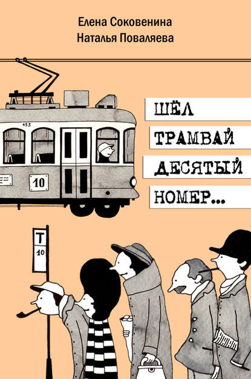
Picture a small European town. Some might call it tiny – but hey, it's still a European capital of sorts. Life here never stands still.
Here walks the Unemployed – predictably grumbling about the government. Meet Granny – doing her usual routine of ferrying her grandson, the Schoolboy, to music lessons. The intelligent Photographer comes along – but most importantly – Madam, wearing her signature blue cap and clutching a bag of biscuits like they're priceless treasure. And, of course, she's right in the middle of yet another drama that'll tug at your heartstrings.
And tram number ten? It's the only reliable thing in the world.
Natalya Pavaliaieva. The Snowball
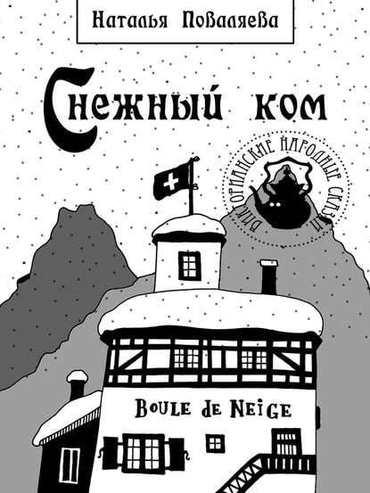
Can a hotel converted from an old radio station be called a "gem"? Of course not! This place is better described as the "Snowball." Its residents never leave their rooms, scare the neighbours with wild antics, practise home alchemy, campaign for women's rights in the neighbouring shop, and generally live together in perfect harmony – driving each other mad with a truly Swiss tolerance for one another's quirks.
Natalia Pavaliayeva. Sonya and Lisa Fly Up

Everything in Lower Village revolves around the German philosopher Immanuel Kant – literally and figuratively. The town hall, the "Starry Sky" bar, the offices of the "Bulletin," the bank, the funeral parlor, the newspaper kiosk, and a row of shops – all stand on Kant Square.
But there are two more notable landmarks in Lower Village: Sonya (age 70) and Liza (age 67).
Sonya and Liza are as wise as you'd expect for their years, but never boring. They have an enviable sense of humor and take an active role in everything that happens in Lower Village. Life here is in full swing – or rather, revolving around Kant. Thanks in no small part to Sonya and Liza.
Victorian Folklore – Not Quite as You Know It
Natalya Pavalyaieva. Ghost Stories
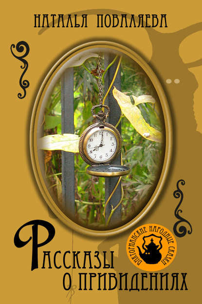
Dear reader, we are educated people, and so we know that ghosts do not exist. It's hardly something you'd admit out loud: that someone's stealing your buttons, howling under your window at night, or creaking inside your wardrobe. Making that sound with their lips, like a cork being pulled from a bottle. Worse yet: someone is eating your cakes! You've surely experienced it yourself – just a moment ago, the cakes were there – and now, gone. So, who did it? The Duke of Wellington?
But in this book, you'll finally find the true account of these events – complete with details and vivid illustrations.
Natalia Pavalyaieva. Occupational Hazards, or A Change of Fortune
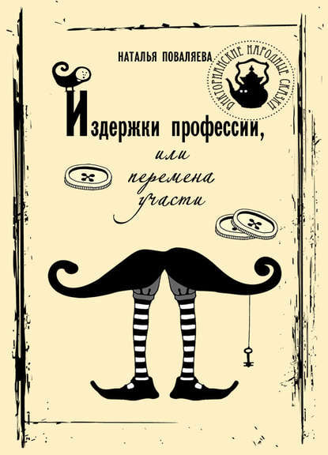
One ballerina accidentally pokes another in the eye. A starving writer tries his hand at smut – with absurd results. A builder tumbles dramatically off some scaffolding. Life hands out catastrophes… that might just be opportunities wrapped in very ugly paper.
Secret Agents
A posthumous edition from the archive of the Sherlockian encyclopedia's creator, Svetozar Chernov (Stepan Poberovsky, Artemiy Vladimirov). Once, Chernov wrote Baker Street and its Surroundings, but that Victorian encyclopedia actually began as source material for his adventurous detective cycle The Secret Agents. Operation The Heir, or Into Service in Shackles is the unofficial second part of this unfinished novel.
Svetozar Chernov. Three Packs of Truth, or The Vinegar Maker's Daughter
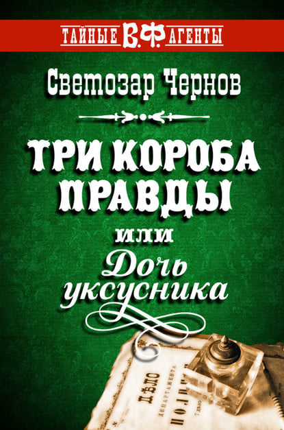
1892, St. Petersburg.
Police Department director Pyotr Ivanovich Durnovo urgently summons Stepan Fabersovsky – a former London detective – and Artemiy Vladimirov – an itinerant painter and former Third Department agent – back from exile in Yakutsk. He has no choice.
"Yes, I know," Durnovo sighs, "that officials, especially from the Third Office, believe Fabersovsky and Vladimirov can do anything. But one would sooner sell their soul to the devil than have to deal with those two."
Little does he realize what an unbelievable farce these two detectives will make of this case. Three Packs of Truth, or The Vinegar Maker's Daughter is the most complete and final book in the Secret Agents series – a posthumous edition of the archive of Sherlockian encyclopedia creator Svetozar Chernov (Stepan Poberovsky, Artemiy Vladimirov). What began as materials for an adventurous detective cycle became Baker Street and its Surroundings, and this novel is its grand finale.
Svetozar Chernov. Mission: The Heir to the Throne, or To the Place of Service – in Shackles
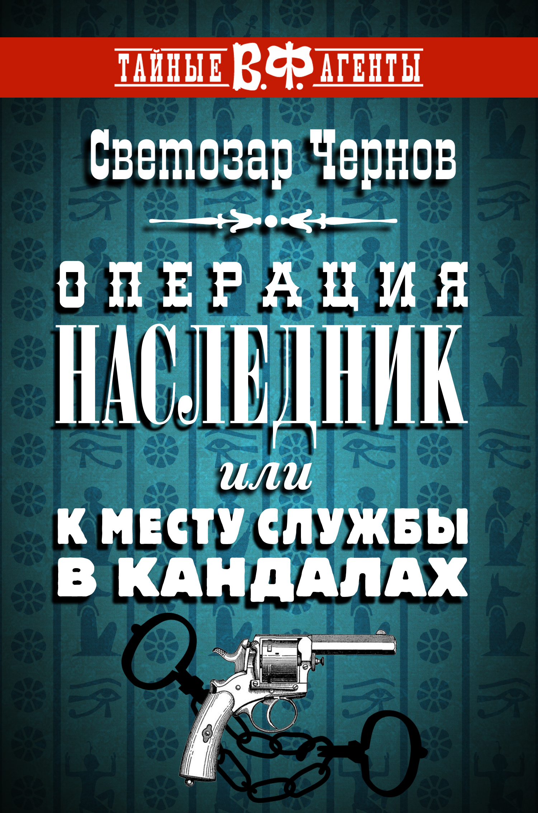
1889, St. Petersburg. Police Department chief Durnovo receives secret orders to eliminate Rachkovsky, head of Foreign Intelligence. Meanwhile, Rachkovsky in Paris plots to do the same to Durnovo. Two years earlier, after pulling off a top-secret job in London, he covered his tracks – sending secret agents Fabersovsky and Vladimirov into Siberian exile. Rachkovsky is astonished to discover they're at large again. Now, they're off to Egypt on a mission to save the ruling dynasty. A prequel to S. Chernov's Three Packs of Truth, or The Vinegar Maker's Daughter. Series: The Secret Agents.
Svetozar Chernov. The Drums of Love, or The True Story of Jack the Ripper
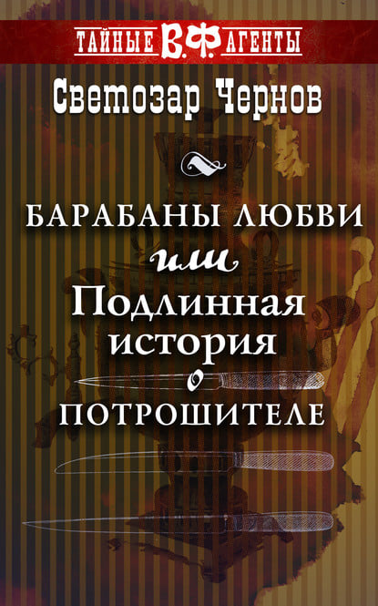
In August 1888, secret agents Stepan Fabersovsky and Artemiy Vladimirov (also known as Gurin) arrive in London. Rachkovsky, chief of Foreign Intelligence, tasks them with a political intrigue to neutralize the Russian revolutionary émigré community. The outcome of their actions will go down in history as "The Jack the Ripper Case." A prequel to S. Chernov's Three Packs of Truth, or The Vinegar Maker's Daughter.